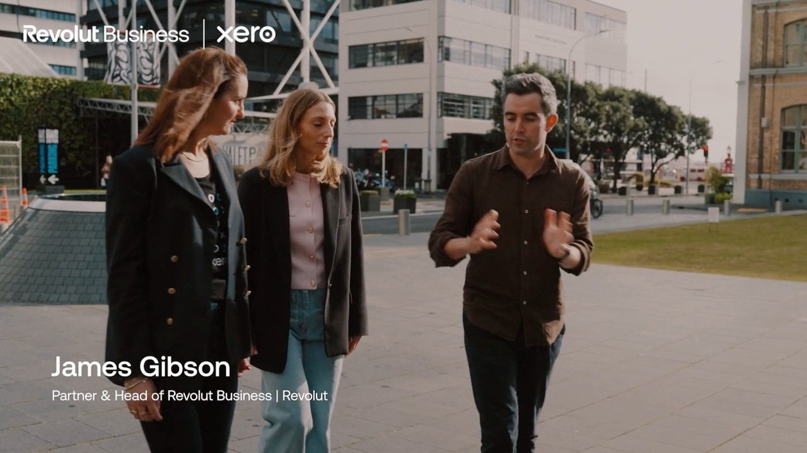
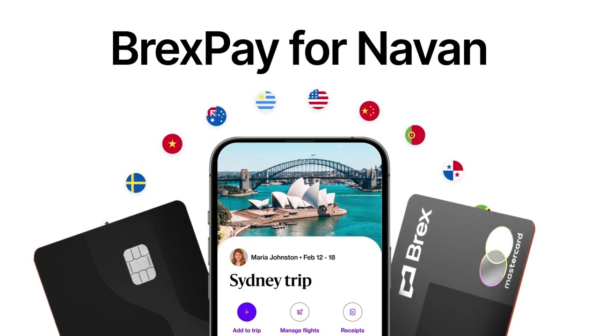
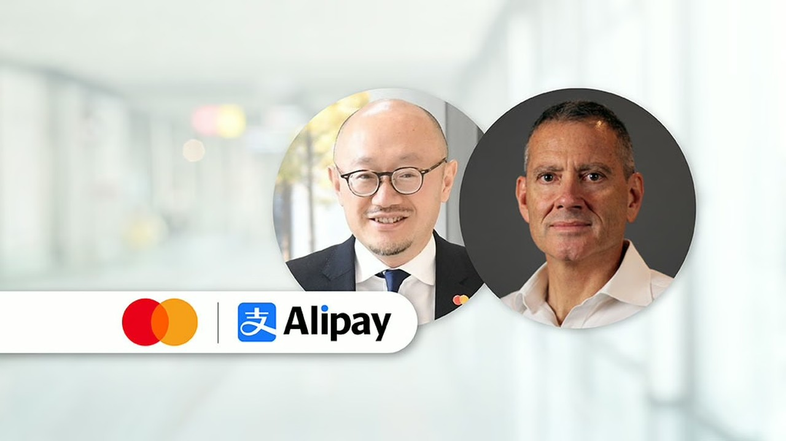

WorldFirst · Co-marketing
Co-marketing with WorldFirst
WorldFirst produces marketing content together with our partners and clients. We cover production and distribution; the partner contributes a representative, approval and one publication on their own channels. This page sets out what is included, what we ask for, and how the process works.
About WorldFirst
WorldFirst is a cross-border payments platform for small and medium-sized businesses, and part of Ant International.
Our audience is business owners and operators who source from China and Asia, ship internationally, and sell through global marketplaces. Where these are also your customers, the two audiences overlap.
What is included
Every co-marketing campaign includes the following four components. They are the same for all partners.
What each side contributes
- Concept, script and production
- All filming and editing costs
- The campaign page on our website
- Distribution to our audience
- One representative to appear on camera
- Brand assets and approval of the final materials
- Publication of the campaign once on your own channels
Campaigns with a shared business objective
This section applies only where relevant.
Some partnerships have a commercial objective that both organisations are already working towards, for example a card programme where both parties benefit as card spending grows, or a payment corridor where both benefit from higher volume.
Where such an objective exists, the campaign can be built around it directly, including product-level presence for both brands and a shared measure of results.
Where it does not, the campaign proceeds on its own terms. Commercial arrangements and any customer offer are agreed separately with your WorldFirst partnership contact and are not part of this programme.
Process
Campaigns typically take several weeks from first call to publication, mainly due to approval cycles on both sides.
Examples of co-marketing in our industry
Published campaigns by other companies, included as reference for the format.

Revolut Business × Xero A payments provider and an accounting platform published a joint campaign covering their integration, with representatives from both companies.
Brex × Navan Two companies launched a jointly named product, each publishing to its own audience. Stripe × Amazon
A customer executive describes how the company manages payments, published by the payments provider.
Stripe × Amazon
A customer executive describes how the company manages payments, published by the payments provider.

Mastercard × Alipay (Ant Group) A card network and a digital wallet announced a payment corridor jointly, with executives from both organisations.Recent WorldFirst co-marketing
Campaigns published with our own partners.
Partner categories
The components above are the same in each case. The subject of the campaign differs by category.
Next step
To discuss a co-marketing campaign, contact your WorldFirst partnership manager or relationship manager.
An initial call takes around 30 minutes and covers the subject of the campaign, who would appear, and the timeline.